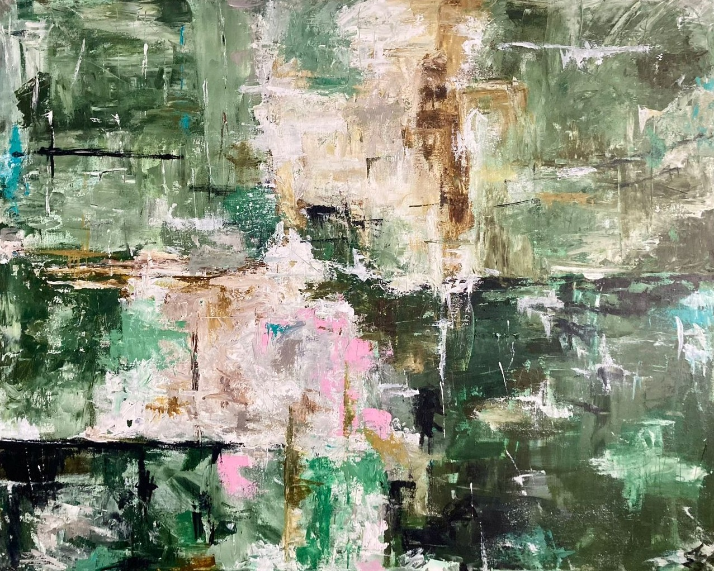

About
Detail · Earthly Echo
Hi, I'm Ava. I paint mostly with acrylics. I like strong colours and thick layers of paint, and how a painting looks different in the morning than in the evening.
Bright colour and thick, textured paint.
A lot of my paintings start from something real, like a place or a face, and get more abstract as I go.
The paintings
Want a painting of your own?
Want one of these paintings, or something made just for you? Send me a message.